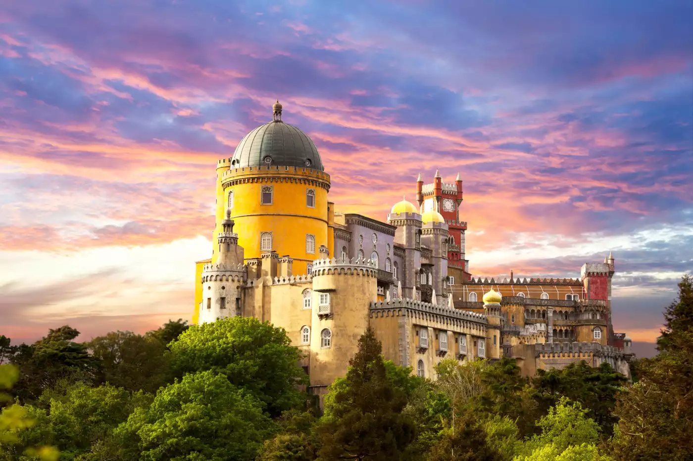
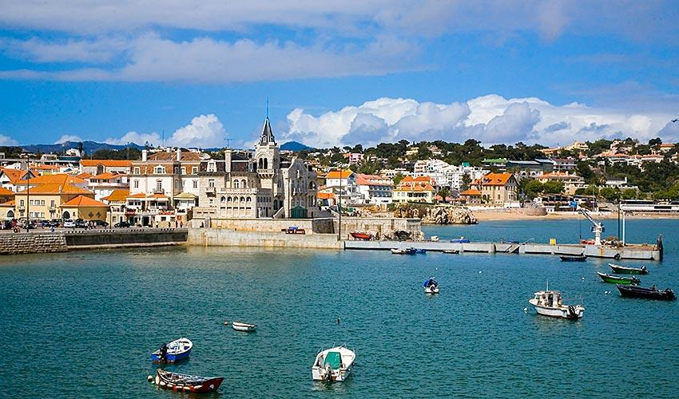
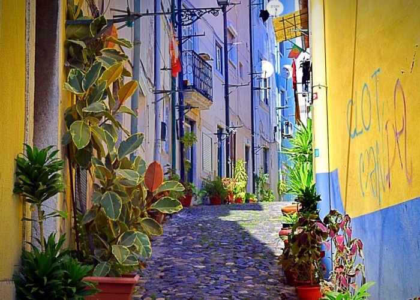

Discover Lisbon & Surroundings

Sintra & Pena Palace
UNESCO World Heritage site with stunning palaces, including the iconic Pena Palace and Moorish Castle.

Cascais & Guincho
Charming coastal town with beautiful beaches and dramatic Atlantic landscapes.

São Jorge Castle
Historic fortress offering panoramic views over Lisbon.

Faraday Museum (IST)
A unique visit for engineers and scientists, connecting history and innovation.

Belém District
Home to Jerónimos Monastery and Belém Tower, symbols of Portuguese discoveries.

Alfama District
The oldest neighborhood in Lisbon, full of history, narrow streets, and Fado music.